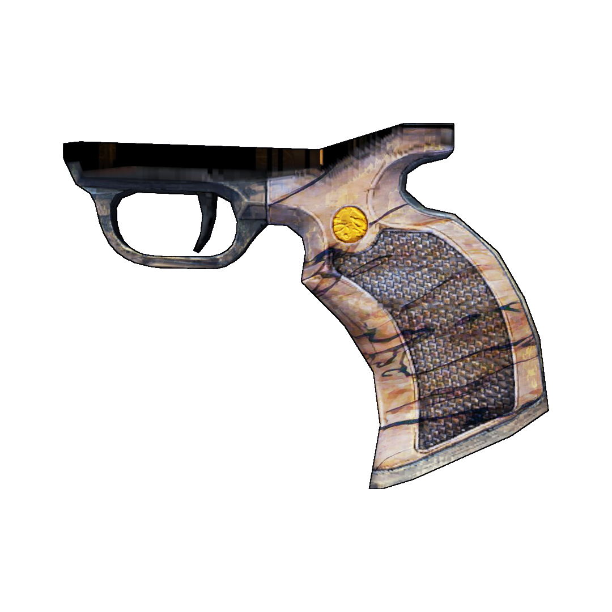

1.35 Max Accuracy
1.3 Impulse Accuracy
×1.15 Reload Time
×1.3 Impulse Accuracy
×1.18 Fire Rate
| Accessory | Barrel | Body |
|---|---|---|
| Grip | Sight |
|---|---|
| Bayonet 1 | Bayonet 2 | Accuracy Laser1 | Double Laser1 |
|---|---|---|---|
| +50% Melee Damage | +50% Melee Damage |
×1.4 Weapon Spread
1.25 Min Accuracy 1.25 Max Accuracy ×1.2 Bullet Speed |
1.15 Weapon Damage
1.3 Fire Rate +2, ×1.28 Mag Size2 +1, ×1.25 Weapon Spread2 ×1.25 Min Accuracy +4 Impulse Accuracy +0.4 ×1.6 Projectile count2 ×2 Shot cost |
| Stock | Tech 1 Mag | Tech 2 Damage | Tech 3 Firerate |
|---|---|---|---|
|
|||
|
1.15 Weapon Spread
1.35 Max Accuracy 1.3 Impulse Accuracy |
×1.56 Mag Size
×1.15 Reload Time |
×1.18 Weapon Damage
×1.3 Impulse Accuracy |
1.03 Weapon Damage
×1.18 Fire Rate |
| Bandit | Dahl | E-Tech | Hyperion | Jakobs |
|---|---|---|---|---|
|
×1.06 Weapon Damage
×1.15 Weapon Spread ×1.15 Min Accuracy |
1.09 Weapon Damage
×1.2 Weapon Spread 1.2 Max Accuracy ×1.25 Accuracy Regen 1.4 Impulse Accuracy 1.15 Burst Impluse |
×2 Weapon Damage
1.5 Fire Rate ×1.2 Status Effect Chance +1 Shot Cost |
1.12 Weapon Damage
1.14 Mag Size 1.35 Weapon Spread 1.2 Impulse Accuracy +15% Crit Damage |
×1.18 Weapon Damage
1.36 Fire Rate 1.4 Weapon Spread 1.25 Min Accuracy ×1.5 Impulse Accuracy |
| Maliwan | Tediore | Torgue | Vladof |
|---|---|---|---|
|
1.1 Weapon Spread
1.1 Max Accuracy ×1.15 Status Effect Damage | - |
×1.24 Weapon Damage
1.09 Fire Rate ×1.25 Reload Time ×1.4 Min Accuracy ×1.25 Impulse Accuracy |
×1.3 Fire Rate
×1.28 Mag Size ×1.2 Weapon Spread 1.25 Impulse Accuracy |
| Bandit | Dahl | Hyperion | Jakobs |
|---|---|---|---|
| Maliwan | Tediore | Torgue | Vladof |
| Rarity | Weapon Damage | Mag Size | Weapon Spread |
|---|---|---|---|
| Common | - | - | - |
| Uncommon | ×1.24 | ×1.21 | ÷1.15 |
| Rare | ×1.48 | ×1.35 | ÷1.25 |
|
Very Rare
Pearlescent |
×1.72 | ×1.49 | ÷1.35 |
| Bandit | Dahl | Hyperion | Jakobs |
|---|---|---|---|
|  | |||
|
×1.35 Mag Size
×1.1 Reload Time ×1.15 Weapon Spread |
1.06 Weapon Damage
×1.15 Max Accuracy ×1.1 Accuracy Regen 1.15 Impulse Accuracy |
1.09 Weapon Damage
1.15 Weapon Spread ×1.1 Accuracy Regen |
×1.12 Weapon Damage
1.09 Fire Rate ×1.05 Reload Time ×1.1 Impulse Accuracy |
| Maliwan | Tediore | Torgue | Vladof |
| ×1.15 Status Effect Damage |
1.06 Weapon Damage
1.14 Mag Size 1.2 Reload Time |
×1.09 Weapon Damage
×1.1 Reload Time ×1.1 Weapon Spread ×1.15 Impulse Accuracy |
1.06 Weapon Damage
×1.12 Fire Rate 1.1 Accuracy Regen |
| None | Bandit | Dahl | Hyperion | Jakobs |
|---|---|---|---|---|
| 3 Movement Speed |
1.39 Zoom FOV
3 Movement Speed |
1.91 Zoom FOV
1.3 Weapon Spread 3 Movement Speed |
3.34 Zoom FOV
1.4 Weapon Spread 3 Movement Speed |
2.82 Zoom FOV
1.5 Weapon Spread 3 Movement Speed |
| Maliwan | Tediore | Torgue | Vladof |
|---|---|---|---|
 |
|||
|
2.43 Zoom FOV
1.2 Weapon Spread 3 Movement Speed |
1.78 Zoom FOV
3 Movement Speed |
1.52 Zoom FOV
1.2 Weapon Spread 3 Movement Speed |
2.04 Zoom FOV
1.15 Weapon Spread 3 Movement Speed |
| Gemstone | Old Hyperion |
|---|---|
|
+15% Crit Damage
+15% Bullet Reflection Chance -80% Bullet Reflection Self Damage -30% Bullet Reflection Damage |
×1.5 Weapon Damage
1.5 Fire Rate ×1.15 Reload Time ×1.5 Weapon Spread ×3 Min Accuracy 1.3 Max Accuracy |
| Manufacturer | Barrel | Grip |
|---|---|---|
| Bandit |
×1.05 Weapon Damage
-1.7 Impulse Accuracy |
+4 Mag Size
1.3 Reload Time |
| Dahl |
×1.1 Weapon Damage
-0.3 Weapon Spread +2 Burst Count |
+3 Mag Size
1.3 Reload Time |
| Hyperion |
×1.1 Weapon Damage
-0.15 Weapon Spread -0.2 Impulse Accuracy |
+3 Mag Size
1.3 Reload Time |
| Jakobs |
×1.15 Weapon Damage
-0.15 Weapon Spread -0.2 Impulse Accuracy |
+1 Mag Size
1.3 Reload Time -0.2 Impulse Accuracy |
| Maliwan |
×1.1 Weapon Damage
-0.3 Weapon Spread +10% Status Effect Chance |
+3 Mag Size
1.3 Reload Time |
| Tediore | - |
+2 Mag Size
1.15 Reload Time |
| Torgue |
×1.2 Weapon Damage
-0.05 Fire Interval1 +3 Mag Size |
+3 Mag Size
1.3 Reload Time |
| Vladof |
×1.1 Weapon Damage
+6 Mag Size -0.25 Barrel Spin-up Time |
+4 Mag Size
1.3 Reload Time |
| Double Laser | Tech 3 Firerate | Vladof Barrel | Vladof Grip | |
|---|---|---|---|---|
| On Hyperion | On Jakobs | On Bandit | On Jakobs | On Jakobs |
| -4 Impulse Accuracy | +2 Additional Ricochets | +2.5 Barrel Spin-up Time |
+3 Weapon Spread
+1 Shot Cost +1 Projectile Count | 1.15 Reload Time |
| Weapon Damage | Increases the damage your weapon deals. | |
|---|---|---|
| Fire Rate | Increases how often your weapon fires. | |
| Mag Size | Increases the size of your weapon's magazine. | |
| Reload Time | Increases the amount of time it takes to reload your weapon. | |
| Weapon Spread | Increases the offset range for each individual projectile, decreasing overall accuracy. | |
| Min Accuracy | Increases the minimum cluster range, the most accurate you can ever be, decreasing accuracy. | |
| Max Accuracy | Increases the maximum cluster range, the least accurate you can ever be, decreasing accuracy. | |
| Accuracy Regen | Decreases how quickly the cluster range recovers after each shot, decreasing accuracy. This is a negative value. | |
| Impulse Accuracy | Increases the amount the cluster range grows each time you shoot, decreasing accuracy. | |
| Burst Impulse | Increases the amount the cluster range grows each time you burst fire, decreasing accuracy. | |
| Zoom FOV | Increases your FOV while scoped, meaning you're less zoomed in. | |
| Additional Ricochets | Increases the amount of times one of your bullets can ricochet | |
| Barrel Spin-up Time | Increases the time it takes your weapon to spin up to it's full fire rate. Note that no pistol barrels actually support this so it will do nothing. | |
| Burst Count | Increases the amount of shots fired in each burst. | |
| Bullet Speed | Increases the speed of your weapon's bullets. | |
| Bullet Reflection Chance | Increases the chance that bullets will relect off you while holding your weapon. | |
| Bullet Reflection Self Damage | Increases the amount of damage that bullets which relect off of you deal to you while holding your weapon. | |
| Bullet Reflection Damage | Increases the amount of damage that bullets which relect off of you deal to enemies while holding your weapon. | |
| Crit Damage | Increases the amount of damage critical hits deal. This is a multiplier of your regular damage - it's base value is 2. | |
| Damage to Healing | Increases the percent of damage dealt that gets returned to you as healing. | |
| Extra Shot Chance | Increases the chance that you actually fire two shots on a single trigger press. | |
| Melee Damage | Increases the amount of damage you deal when meleeing while holding your weapon. | |
| Movement Speed | Increases how quickly you move while holding your weapon. | |
| Projectile Count | Increases the amount of projectiles your weapon shoots each shot. | |
| Shot Cost | Increases the amount of ammo it takes to shoot your weapon once. | |
| Status Effect Chance | Increases the chance that shooting an enemy will give them a DoT. | |
| Status Effect Damage | Increases the damage dealt by DoTs inflicted by your weapon. |
{kind=link}